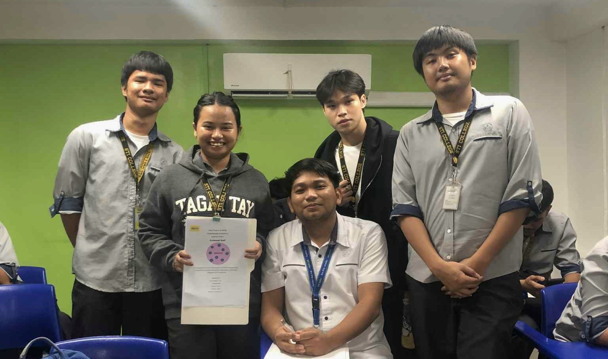
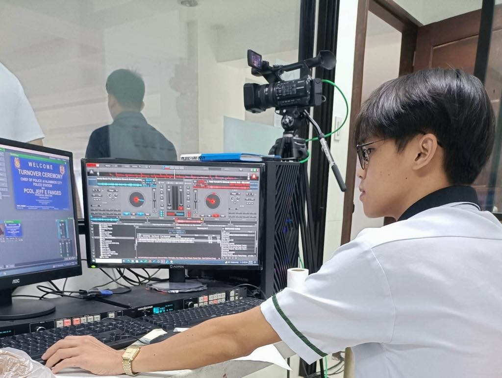
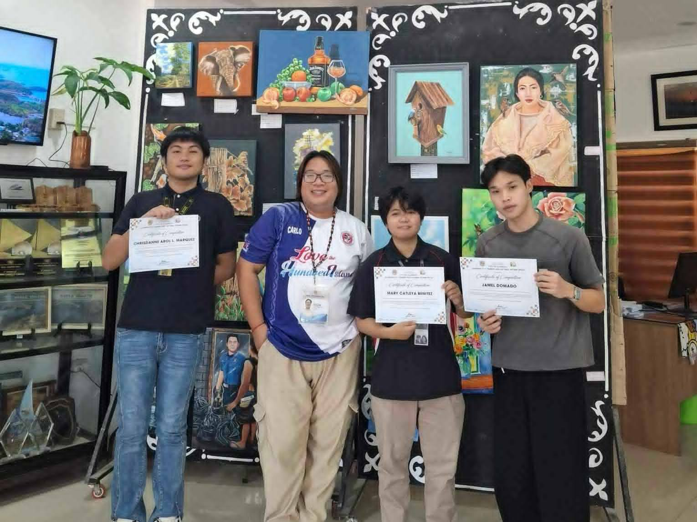

3rd June, 2025
Final project milestone
This is the day we successfully passed our final application project. Standing with my groupmates and our instructor, Sir Al Gilliani Pol, we felt both proud and relieved. All the hard work, sleepless nights, and countless revisions finally paid off.
Our project wasn’t just about submitting a requirement. It was a reflection of everything we’ve learned, tested through real application. From brainstorming to development, each member gave their best. We supported one another, pushed through challenges, and grew not just as students, but as a team.
Special thanks to Sir Al Gilliani Pol for his guidance, patience, and constant encouragement. He didn’t just teach he motivated us to improve and aim higher.
This milestone reminds us that teamwork, perseverance, and a little pressure can bring out the best in us. Here’s to more achievements and lessons ahead!

7th February, 2023
My day in the control room
I had the opportunity to be part of the technical team during a turnover ceremony event. In this photo, I’m working in the control room managing the sound, camera, and other tech operations to make sure everything runs smoothly.
Being behind the scenes might not seem exciting to most people, but there’s a lot going on. I was in charge of handling the audio levels, switching camera angles, and ensuring the livestream or recording was clear and professional. I used software to control music and sound cues while constantly monitoring the event from my screens.
Events like this rely heavily on teamwork and attention to detail. One small mistake — like a muted mic or delayed camera switch can affect the whole program. That’s why I stay focused the entire time.
It’s not always easy, but I enjoy being the person who helps everything work in the background. It feels good to know that my role helps create a smooth experience for both the audience in the venue and those watching online.
Whether it’s fixing cables, managing sound levels, or adjusting cameras, it’s all part of the job and I’m proud to do it.

27th May, 2025
From Learners to Leaders: Our on-the-job Journey
After completing 320 hours of on-the-job training at the Tourism Office, we finally received our certificates and this photo captures that proud moment.
Throughout our OJT, we were given real responsibilities that helped us grow professionally and personally. We assisted tourists, computed bills, and guided immersion students from other schools. Every task we handled gave us a better understanding of how tourism works in real life from customer service to behind-the-scenes coordination.
Working in the tourism office taught us the value of patience, communication, and being reliable team members. It also allowed us to appreciate the beauty of promoting local culture and helping visitors enjoy their stay.
Big thanks to our supervisor and everyone at the tourism office who supported us and treated us like part of the team. This experience has inspired us to continue learning and improving as future professionals in the field.